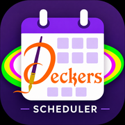

Deckers Scheduler
Add this page to your Home Screen first, then open the scheduler.
Open Scheduler
In Safari, tap Share, then Add to Home Screen.

Add this page to your Home Screen first, then open the scheduler.
Open Scheduler